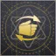
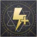

T0#1
- 框架
- 干扰武器
- 勇士
- 屏障
- 来源
- 反叛
广口弹匣
速射瞄准
孤狼
直击要害
聚合充能
嫉妒刺客
小棒猪T0
DPS5730
备注狙击手冥想、远程填装、动能合成
总伤148819 / 接近无限
建议刷取加速突击版本
AegisS
首个也是唯一一个重弹狙击枪 框架强但 3 号位一般
配套视频：【命运 2】购物清单 紫枪部分杂谈
武器分级随使用场景变化，主要按高难宗师、副本清怪／机制、输出三类场景评估；基础伤害与 DPS 见武器框架。
T0：无可替代，同定位最优
T1：主力之选，强度突出
T2：可用备选
T3：特定场合可用
T4：当前版本不推荐
为了更精细化评级，会出现 T0.5／T1.5 的小数点评级。评级只是为了提供衡量强度的标准，请勿上纲上线。不会出现 PVP 枪，不会出现基本没有用途的枪。
如何衡量一把武器的价值？
清怪／高难宗师等：
①武器形态优秀，对精准伤害要求不高
②武器伤害合格
③武器弹药经济优秀：弹药生成属性高，每盒弹药总伤高
④功能性：技能回转（超凡／大招），硬减软减获取，高频率 dot，辅助队友（奶枪／切割／疲惫）……
输出：
①伤害高：DPS 高，切换 DPS 高
②总伤高
③爆发高
④功能性：劫子弹，高频率 dot，技能回转……
类型评级 T0。配合加密数据盘，翻新 A499 就是最无脑的 T0 精准输出武器，总伤/每盒弹药总伤都是相当不错，剑狙双切的 DPS 会进一步提升（尖塔套更高），搭配动能合成边打边劫总伤也趋近无限，在高难中也是非常优秀的武器
建议刷取加速突击版本
首个也是唯一一个重弹狙击枪 框架强但 3 号位一般
类型评级 T0。最优秀的非精准输出武器，在高难中也可使用，DPS 顶级，总伤/每盒弹药总伤适中，有不错的神器搭配，要注意虽然各个框架间备弹量有所不同，但是拾取的强化弹药量是一致的都为 3 发。高难中三号位通常选择自填重建或为松身裤选择集束炸弹等双增伤，vog4 爆炸光能被视为好用的增伤
狼群弹药对筒子的增幅大约在 26% 左右
持久印象对筒子的增伤大约在 27% 左右
集束炸弹对筒子的增伤大约在 25% 左右（即使是常规体型）
注：持久印象和爆炸光能都无法让狼群弹药和集束炸弹吃到增伤
双脚架偶尔可以用过机制中补充子弹，但如今不缺重弹的环境很少使用

操控性最强的 perk 池和原始特性，全游戏最顶级的 DPS 之一，集束炸弹+聚合充能是最强的抱射输出之一，配合边打边劫更是顶级。自填+持久印象/聚合充能更多是金狙轴，还有丰盈满溢的筒子五连发。嫉妒军械库三切如今不常见，集体爆破配合狼头星火泰坦可用
毫无疑问是这游戏里的最强火箭筒 集束炸弹实际至少等于 20% 伤害加成 最强的起源特性之一
超充弹匣有意思，然而由于填装速度赶不上发射速度没有那么理想，使用时最好还是切枪打法
超充弹匣效果没那么强 但用换挡时其他方面还不错
嫉妒刺客+原始特性曾经作为倾斜筒子的选择，然而如今光芒复仇是他的完整上位
比玖的仪式版本更专注爆发
边跑边打击杀填装，双脚架+爆炸光能的组合很有意思，或许可以用作清怪洗地筒子
看起来非常适合游走内容
类似注视焦点 但没有嫉妒军械库
顶级持久印象+聚合充能双增伤，如果有哨兵圣盾会比光芒复仇强，可搭配单人合唱补伤害，换弹抱射也有不错的输出
理论上游戏最强双伤害 Perk 组合 尤其配虚空泰坦哨兵举盾 Bug
加速突击提供额外 6% 增伤，perk 池不错
热血上头缚丝版
加速突击提供额外 6% 增伤，perk 池不错
白送伤害的起源 标准嫉妒军械库+优秀的伤害 Perk 分布
起源特性有额外增伤适合收割者贡品，但不足够强，更适合高难
爆发专家 高投入高伤害 Perk+起源
翻新 perk 后不错，高难很适合搭配杀手之牙裂波者等强力虚空副手，集束炸弹双增伤配合杀手之牙松身裤使用
Perk 池很有限 不过心灵骇入放在火箭上还不错
集束炸弹+集体行动适合星火泰坦，或者冰猎冰术等
集束炸弹+收割者/腹背受敌有些冷门用途 也有连锁反应+双脚架
爆炸光能收割者贡品双增伤有特色
技术上双伤害 Perk 很强但框架不对
爆炸光能+双脚架倒很新颖
perk 池和原始特性回技能不错
布瑞遗产修复后 就只是一把双伤害 Perk 的高冲击力火箭筒
唯一的嫉妒军械库高冲
最早的嫉妒军械库火箭 可惜框架不对
堪用的填装 Perk + 中等框架 + 不错的持续伤人 Perk
超充弹匣刚好对上了精密的射速，可以持续进行输出
与其他 C 梯队的精密双脚架火箭筒定位相似
顶级原始特性（双倍弹匣）和优秀的池子，可惜在一个错误的框架
C 集束炸弹/双脚架+自带带追踪组合用于游走很有意思 致命失误也能扩弹匣
羸弱能量球+集束炸弹，狼群弹药可以产很多球
标准精密框架 游走内容用 但有羸弱+集束炸弹可产球
类型评级 T0。紫刀剑绝大部分作用是用作急切赶路，在高难中还会承担反屏障的角色，输出的 DPS 和总伤/每盒弹药总伤优秀，但是近战伤害手段会更多倾向于喷子狼毒星界之火等，刀剑没有弹药生成属性，胸部弹药生成属性不生效，弹药进度接近 0 弹药生成水平
优秀的双增伤和起源特性，输出和赶路都是顶级
双伤害 Perk 常态表现不错 而且是最佳轻攻击急切框架
优秀 perk 池，输出和赶路都是顶级，输出燃烧野心配合黎明副歌伤害会更高，但一般没有机会使用黎明副歌，所以采用非黎明副歌 DPS
轻质急切+混沌重塑 伤害较低但不太重要
perk 池一般，中个急切用来赶路即可
少见的闪电反击+急切组合 起源也有意思
perk 池优秀，冷冻钢铁功能性强。集体爆破+冷冻钢铁配合药剂神器寒风凛凛可以产出冰影碎片回雷
涡流的反过载让冷冻钢铁价值降低 也有 混沌重塑+问题解决者
顶级 perk 池，双增伤也有输出能力，无刀剑能量转右键可以 1 发弹药一颗球
涡流急切 功能性 Perk 选择最多
苍白之心原始特性在速通中经常会搭配奶枪元素超充器刷金枪猎大招击杀
庄家之选套装选择 除此不算特别突出
顶级原始特性让他成为全游戏唯一无任何前置条件只需造成伤害就可以回转大量技能能量的武器
得益于布瑞遗产可用于技能生成 除此不太有意思
铸造刀集体爆破非常顶级，常见于冰电职业，药剂神器风寒（寒风凛凛）、NPA 朝向裂口等能够产出元素拾取物并且手雷比较重要的配装中
可切换急切 有独家双集体爆破+行动 Perk 组合
三号位急切刀锋的搭配优秀
可用于常态玩法 伤害方面没有好东西
配合震颤反馈能双反
基本是孤空伤痕 Perk 稍不同且没有转向
转向很有意思，“右键打，左键打”我开玩笑的
也有转向但重击会立刻耗光层数 主要只是铸造者游走用刀剑
没有急切很可惜，冷钢可以三反
典型 羸弱能量球+伤害的铸造者
唯一一把波形急切反势不可挡刀，燃烧野心灼烧叠层会触发尖锐收割
急切 框架一般 Perk 多样性不错 伤害框架也不算强
最好触发的增伤池子
类似毒鲉 但没有坚韧提供伤害加成
范围上切割
对缚丝神器和框架有不错常态 Perk 也能用于伤害
天生比其他适配框架伤害高大约 8%，输出顶级刀剑，增伤比较依赖棱镜
伤害曲线很强的框架 缺真正的双伤害 Perk 但可能是综合伤害最强的刀剑
一左一右刚好一颗球，原始特性对屏障增伤
也有闪电反击+急切 但非移动用的 Perk 更可用 不过急切框架更差
标准适配伤害刀剑 可选 急切
除了转向 就是标准伤害 Perk + 适配急切
三反刀，没有太多作用
经典冰影 Perk 组合 另有羸弱能量球+无情打击+伤害 Perk
狂暴和转向都是不好触发的增伤，如果有条件触发的话他是伤害最高的紫刀剑，优秀的原始特性，常见于泡泡盾泰坦，猎人术士也可使用
冷门击杀叠转向的双伤害 Perk 组合 被差框架拖累 但其他方面有意思
原始特性实际上就是攻击急切刀，但是会有硬直实际上不好用，切出来砍第一刀最好先轻击再衔接重击否则直接重击很容易砍空，双增伤是顶级伤害选择，但是启动困难，最好一个使用药剂包风寒的推推位棱镜猎或棱镜术使用冰粪坑为全队产冰影碎片
比更史赛克的老练稳定的双伤害 也有可用的普通伤害 Perk
类型评级 T1.5。除了总伤比翻新 A499 略高，DPS 差了相当多，但因为动能合成的存在直接消除了总伤差距，，这意味着线融只能在方便打精准的时候使用，在多人情况下可以说是翻新的全方面下位。或许只有在队伍中几乎无法施加易伤手段、聚合充能叠层并不理想并且是长轴时才适合上场（粒子解构）；单人 solo 的情况下，使用精准工具的揭纱露眼/聚焦狂怒的灾变会略优于翻新，因为单人情况下的易伤、聚合充能层数施加没有多人方便，而且单人情况下的粒子解构可以一直回复弹匣子弹，大幅减少了填装次数也就提高了 DPS，揭纱露眼对于泰坦单人内容是最优秀的精准伤害武器之一。粒子解构是施加在战斗人员身上的易伤，不与其他易伤叠加

充能时间顶级增伤原始特性，不错的 perk 池，精准工具在携带手部填装时可以续上，相当于 27% 左右的增伤，不稳定神枪手又可以增加一点 DPS。原始特性志愿容器 15% 加速充能在 DPS 更优秀，异端行径 7% 增伤在总伤上更优秀，通常建议使用志愿容器。
有三种选择（优先级从前到后）：①加速线圈+大师换弹+充能模组②强化电池+大师换弹+弹匣模组③加速线圈+大师充能+充能模组。
由于粒子解构是施加在战斗人员身上的易伤，所以可以蹭队友的粒子解构，在有 15% 易伤时，可以同时吃到粒子解构和拓展深渊的 10% 增伤，很少有这种应用场合。
遥遥领先的最强线性：双伤害 Perk 事不过四+优秀的持续伤害 Perk 超强起源
顶级 perk 池，由于聚合充能更适合多人场景下的精准DPS，如果多人要使用线融往往更多被人们选择
4 号位比揭纱露眼稍好 但明显低一档
原始特性有对光明写魔族的 10% 额外增伤，加上腹背受敌就是深渊机灵尾王的特攻武器
新 Perk 下最佳适配点射
在有队友使用粒子解构时可以用电弧复合吃额外增伤，弑后者同理
伪双伤害 Perk 可惜框架不佳
类型评级 T2。有接近筒子的不错切换 DPS，好奇之器银白弩箭的增伤，但是由于缺乏优秀的 perk 池或者对应属性并且需要打精准，只有好建议真正有全游戏最高输出之一的 DPS 使用场景
嫉妒军械库+高地配合三箭虚空猎，有机巧纬线+传家宝+好建议，单人特工命运眷顾的单人情况下顶级 dps（单人一波奈扎雷克）。还有三个需求层级射圈后切换到枯萎囤积/区域拒止等 dot 好建议双切的全游最高 DPS，曾经能刷到加速突击版本，如今已绝版，嫉妒军械库的打法在高难本也可以被使用来疯狂灌伤。
如果高地在 上可用 可成为轮切伤害选项
唯一一把自填冰弩，需求层级射击穿插一发冰弩会比摁射需求层级高大约 25% 的 DPS，但通常没有必要为自己增加操作难度，二号位充能弩箭最优秀
很酷的清怪选择
类型评级 T2.5。惨不忍睹的总伤和每盒弹药总伤，勉勉强强的 DPS，没有专属增伤神器，只有药剂包电弧复合不祥之兆可以利用，所以电榴弹将是主要的推荐对象，但是电飞蛾的索敌也存在问题。级联点的双增伤爆发用处也极其有限，速射框架在 DPS 以极小的差距优于其他两个框架，总伤略低于其他两个框架，在每盒弹药总伤上由于都拾取 5 发弹药适配和波形要更优秀
可以说动能冲击、突破清场、电弧复合是榴弹的主要增伤神器
拓展深渊在有 15 易伤时也有一定的性价比
电弧致盲生效时间为 10 秒
vog4 配合爆炸光能适配榴弹，队友越多越好，爆炸光能的实际增伤接近 50%
不详之兆->驱逐引擎->不祥之兆->21 发咒骂->不详之兆->驱逐引擎->不祥之兆->（突破清场填装）8 发咒骂
没嫉妒军械库 持续伤 Perk 不是最好的 不过心灵骇入还不错
2 发不祥之兆->驱逐引擎->4 发末日循环（提高总伤，拉长输出时间保证爆炸光能）
替代：苦乐参半（仄/凯尔之陨）
类似时运无常
但起源更差
虚空箭波形在有单人特工的加持下可以单人一波晚星之主老二
因起源原因 整体不如维度内旋轮线
级联点爆炸光能作为顶级 DPS 爆发
粘性榴弹（已绝版）+级联点+爆炸光能仍是传说重弹中爆发最高的 其他 Perk 也不错
豪华的 perk 池和原始特性，级联点爆炸光能/腹背受敌作为顶级 DPS 爆发
没粘性榴弹但其他方面 Perk 和起源都比边缘交通好
perk 池非常豪华
在能打直击伤害的上潜力很高 爆炸光能没有作用 但清怪不错
原始特性对光明邪魔族有额外 10% 增伤
类似永存者但有腹背受敌 起源更差
perk 池和起源特性优秀
最佳框架 嫉妒军械库+好的持续伤害 Perk
类型评级 T3。机枪的总伤极高但是 DPS 极低，比绿弹还低，清怪也轮不上他，是真正意义上没有任何用处的武器，框架之间的平衡不错：DPS：速射＞攻击＞适配＞高冲＞热能。总伤：高冲＞适配＞攻击＞速射＞热能。每盒弹药总伤：高冲＞热能＞适配＞攻击＞速射。因此清怪的优选是攻击、适配、高冲，而攻击和适配又因为手感优秀被更多人使用。个人认为击杀记录并不是特别优秀的 perk
参考数值：DPS 2533 · 总伤 243302
框架、手感、属性、perk 池和原始特性都是最顶级的
神器支援极强 可用爆破专家 起源优秀 框架优秀
还行的 perk 池和顶级原始特性
伤害曲线不如惩戒措施
起源更差 但能反屏障
优秀的 perk 池和起源特性
纳米技术追踪导弹武器家族里较弱的一个 但整体仍很好
优秀的 perk 池和起源特性
庄家之选套装选择 伤害曲线和 Perk 也强 可选撕裂+超充器
三号位辉耀炽热
杀伤组合不如远方黎明 起源和框架也更差
三号位燃烧野心
烈日双溅射 Perk + 一些填装 Perk